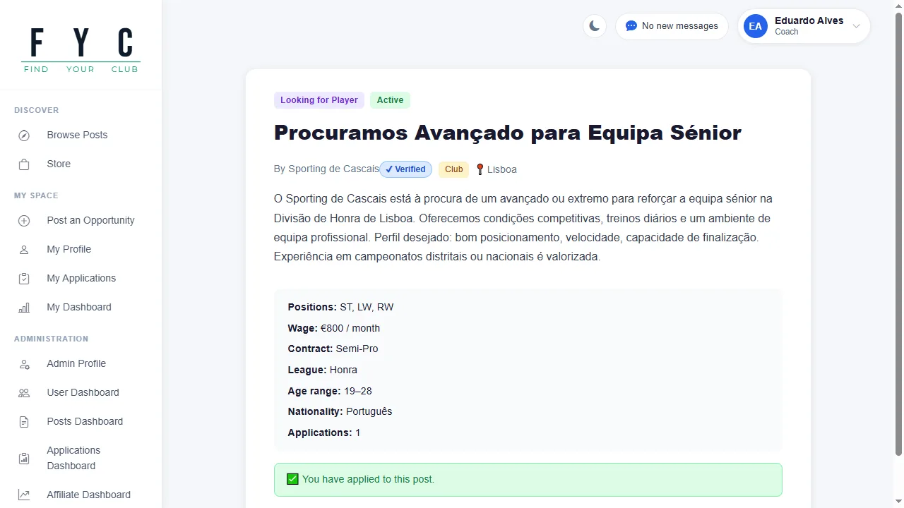

FindYourClub
A recruitment platform for sport: players, coaches, clubs and scouts post opportunities, apply and talk, in English and Portuguese. It launches with football and is built for any sport.
- Role
- Built solo: product, code, deploy and brand
- Users
- Players, coaches, clubs and scouts
- Status
- Online at findyourclub.pt
- Stack
- .NET 10
- Blazor WebAssembly
- ASP.NET Core
- EF Core
- SQL Server
- Stripe
- Docker
- Caddy

The idea
Grassroots and semi-professional sport still recruits through word of mouth and group chats. FindYourClub gives each side a profile and a place to say what they're looking for: a club that needs a goalkeeper coach, a player looking for a team, a scout looking for talent. It comes from my own life in football: I coach goalkeepers, and my first software project in school was a club management app.
What I built
- Four profile types, player, coach, club and scout, with fields for each role, a completion bar and highlight-reel videos.
- An opportunity feed with infinite scroll and filters for wage, age, nationality, league level and distance, up to 500 km.
- Applications with a chat per application, and ratings from both sides once one is accepted.
- Ranks, Bronze to Platinum, that set the limits, a Stripe store to upgrade, boosted and pinned posts, and a 5% affiliate programme.
- An admin area: post review queue, user management, verified badges and per-rank store settings.
- Emails in both languages for every key event, and posts that expire on their own through a background worker.
Under the hood
- Interface
- Blazor WebAssembly on .NET 10 with Syncfusion components and English/Portuguese dictionaries
- API
- ASP.NET Core with EF Core code-first on SQL Server, ASP.NET Identity and JWT
- Shared
- One project of DTOs and constants used by both the API and the interface
- Location
- Profile locations geocoded with Nominatim to power the distance filter
- Hosting
- Docker Compose on a Hetzner server behind Caddy, deployed with a pull and a rebuild